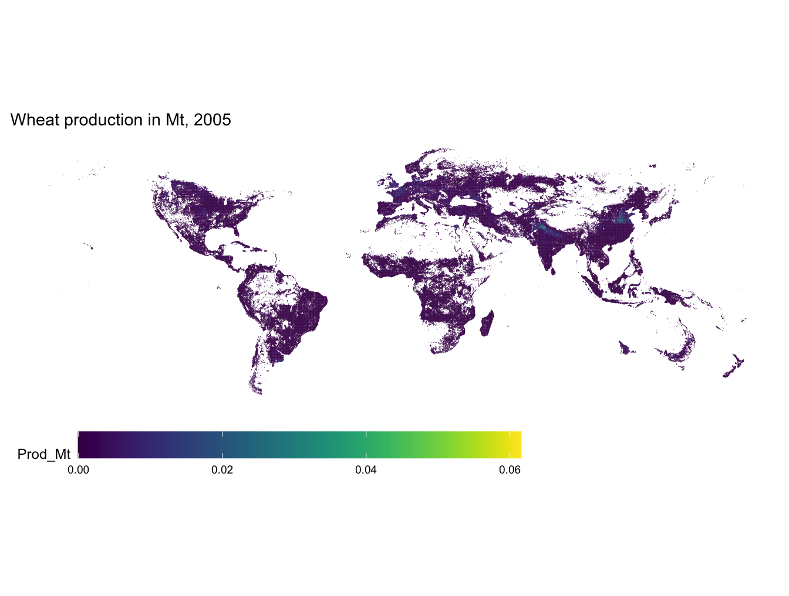
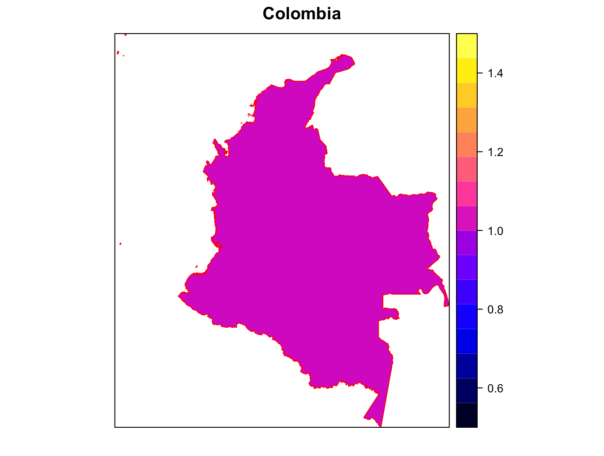
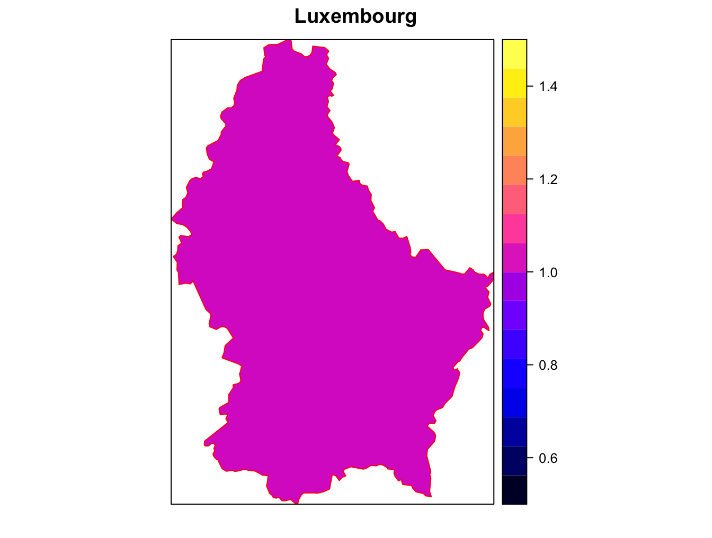
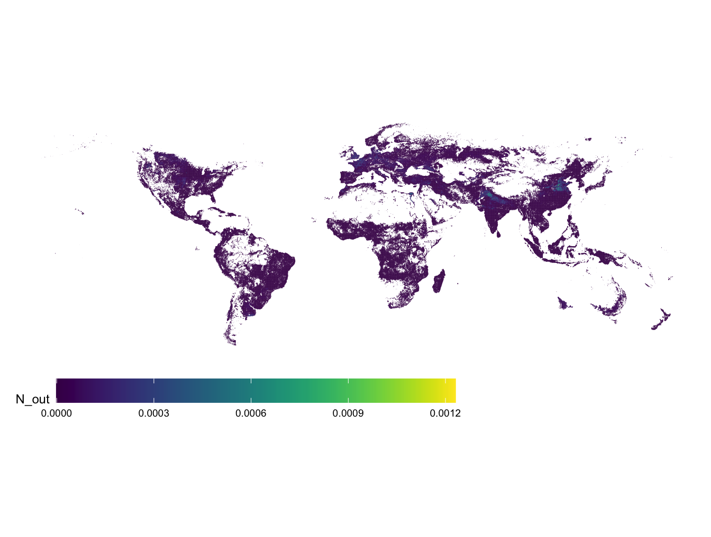
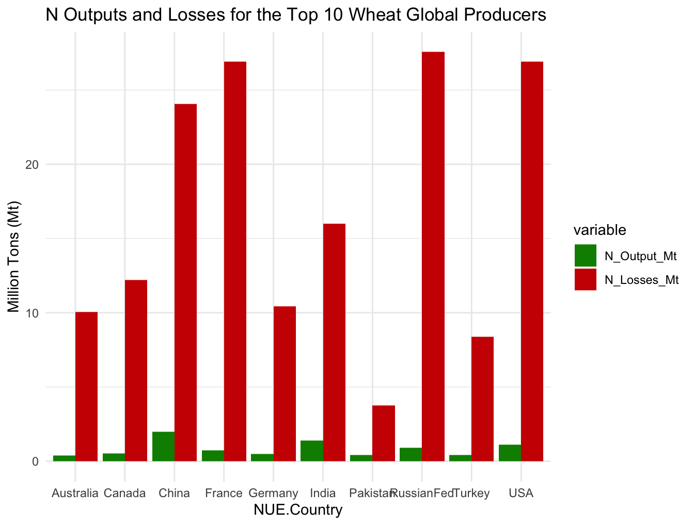

terra 1.7.18ReSANGloW:
A Reproducible Spatial Analysis for Charting Nitrogen Dynamics in Global Wheat Production
Goal
Following the indications, the goal of this reproducible code is to (IIASA-BNR, 2023, assignment):
“Combine various datasets to generate indictors of nitrogen loss to the environment associated with wheat production at various spatial scales”
“Provide graphical representations and conduct simple comparisons across a few countries”
“Provide a reproducible code associated to these tasks.”
Task 1
Using SPAM raster data (Wood-Sichra, Joglekar, and You 2016), a new raster at the same resolution, containing wheat production volume (in million tons Mt) is produced.
Global scale in a raster format (5 arcminute spatial resolution) estimates of yield in Kg/Ha, physical area in Ha and harvested area in Ha for the year 2005 are available.
Reading SPAM data
spam_data = list("yield" = rast("data/SPAM_2005_v3.2/SPAM2005V3r2_global_Y_TA_WHEA_A.tif"),
"harvested_area" = rast("data/SPAM_2005_v3.2/SPAM2005V3r2_global_H_TA_WHEA_A.tif"),
"physical_area" = rast("data/SPAM_2005_v3.2/SPAM2005V3r2_global_A_TA_WHEA_A.tif"))str(spam_data) List of 3
$ yield :S4 class 'SpatRaster' [package "terra"]
$ harvested_area:S4 class 'SpatRaster' [package "terra"]
$ physical_area :S4 class 'SpatRaster' [package "terra"]spam_data[['yield']]class : SpatRaster
dimensions : 1853, 4320, 1 (nrow, ncol, nlyr)
resolution : 0.08333333, 0.08333333 (x, y)
extent : -180, 180, -64.41667, 90 (xmin, xmax, ymin, ymax)
coord. ref. : lon/lat WGS 84 (EPSG:4326)
source : SPAM2005V3r2_global_Y_TA_WHEA_A.tif
name : SPAM2005V3r2_global_Y_TA_WHEA_A
min value : 0
max value : 19429 Calculate Wheat Production
Calculate wheat production by multiplying the raster layers for yield (in Kg/Ha) and harvested area (in Ha) using the * operator:
- wheat_production = spam_data[[“yield”]] * spam_data[[“harvested_area”]]
Convert Units: The resulting values are in Kg, so it is needed to convert them to million tons (Mt). Assuming 1 ton is equal to 1,000 Kg, it is possible to use the following:
- wheat_production_Mt = wheat_production / (1e3 * 1e6)
Calculate Wheat Production
- A global map is created and the raster is exported in a geotif format:
wheat_production = spam_data[["yield"]] * spam_data[["harvested_area"]]
wheat_production_Mt <- wheat_production / (1e9)library(raster)Loading required package: spwriteRaster(wheat_production_Mt, filename = "./output/wheat_production_Mt.tif",
overwrite=TRUE, gdal = c("COMPRESS=DEFLATE", "TFW=YES"))Wheat Production in Mt in 2005
Attaching package: 'scales'The following object is masked from 'package:terra':
rescaleLoading required package: viridisLite
Attaching package: 'viridis'The following object is masked from 'package:scales':
viridis_pal
Task 2
- Using the newly created raster and the GAUL shapefile of administrative borders, the production is aggregated to country level and exported to a csv file.
library(raster)
library(sf)Linking to GEOS 3.11.0, GDAL 3.5.3, PROJ 9.1.0; sf_use_s2() is TRUElibrary(rgdal)Please note that rgdal will be retired during 2023,
plan transition to sf/stars/terra functions using GDAL and PROJ
at your earliest convenience.
See https://r-spatial.org/r/2022/04/12/evolution.html and https://github.com/r-spatial/evolution
rgdal: version: 1.6-5, (SVN revision 1199)
Geospatial Data Abstraction Library extensions to R successfully loaded
Loaded GDAL runtime: GDAL 3.5.3, released 2022/10/21
Path to GDAL shared files: /Users/torres/Library/R/arm64/4.2/library/sf/gdal
GDAL does not use iconv for recoding strings.
GDAL binary built with GEOS: TRUE
Loaded PROJ runtime: Rel. 9.1.0, September 1st, 2022, [PJ_VERSION: 910]
Path to PROJ shared files: /Users/torres/Library/R/arm64/4.2/library/rgdal/proj
PROJ CDN enabled: FALSE
Linking to sp version:1.6-0
To mute warnings of possible GDAL/OSR exportToProj4() degradation,
use options("rgdal_show_exportToProj4_warnings"="none") before loading sp or rgdal.
Attaching package: 'rgdal'The following object is masked from 'package:terra':
projectlibrary(rgeos)rgeos version: 0.6-2, (SVN revision 693)
GEOS runtime version: 3.11.0-CAPI-1.17.0
Please note that rgeos will be retired during 2023,
plan transition to sf functions using GEOS at your earliest convenience.
GEOS using OverlayNG
Linking to sp version: 1.6-0
Polygon checking: TRUE gaul_data_sf <- st_read("data/GAUL/g2015_2005_2.shp")Reading layer `g2015_2005_2' from data source
`/Users/torres/Documents/02_working/3-Production/05_models/32_iiasa/global_n/data/GAUL/g2015_2005_2.shp'
using driver `ESRI Shapefile'
Simple feature collection with 38189 features and 12 fields
Geometry type: MULTIPOLYGON
Dimension: XY
Bounding box: xmin: -180 ymin: -89.9 xmax: 180 ymax: 83.62742
Geodetic CRS: WGS 84gaul_data_sp <- readOGR(dsn = "./data/GAUL", layer = "g2015_2005_2")Warning: OGR support is provided by the sf and terra packages among othersWarning: OGR support is provided by the sf and terra packages among othersWarning: OGR support is provided by the sf and terra packages among othersWarning: OGR support is provided by the sf and terra packages among othersWarning: OGR support is provided by the sf and terra packages among othersWarning: OGR support is provided by the sf and terra packages among othersOGR data source with driver: ESRI Shapefile
Source: "/Users/torres/Documents/02_working/3-Production/05_models/32_iiasa/global_n/data/GAUL", layer: "g2015_2005_2"
with 38189 features
It has 12 fieldsgaul_lev0 <- levels(factor(gaul_data_sp@data[,"ADM0_NAME"]))
ids <- lapply(gaul_lev0, function(x) which(gaul_data_sp@data[,"ADM0_NAME"] == x))
# sp_join <- as(gaul_data_sp, "SpatialPolygons")# ```{r parallel-join, echo=TRUE, eval=compute_agg}
## Parallel computation
library(pbapply)
library(parallel)
library(doParallel)Loading required package: foreachLoading required package: iteratorsncores = detectCores() - 2
# ncores = 8
cluster <- makeCluster(ncores)
registerDoParallel(cluster, cores=ncores)
clusterEvalQ(cl = cluster, c(library(rgeos, raster)))[[1]]
[1] "rgeos" "sp" "stats" "graphics" "grDevices" "utils"
[7] "datasets" "methods" "base"
[[2]]
[1] "rgeos" "sp" "stats" "graphics" "grDevices" "utils"
[7] "datasets" "methods" "base"
[[3]]
[1] "rgeos" "sp" "stats" "graphics" "grDevices" "utils"
[7] "datasets" "methods" "base"
[[4]]
[1] "rgeos" "sp" "stats" "graphics" "grDevices" "utils"
[7] "datasets" "methods" "base"
[[5]]
[1] "rgeos" "sp" "stats" "graphics" "grDevices" "utils"
[7] "datasets" "methods" "base"
[[6]]
[1] "rgeos" "sp" "stats" "graphics" "grDevices" "utils"
[7] "datasets" "methods" "base"
[[7]]
[1] "rgeos" "sp" "stats" "graphics" "grDevices" "utils"
[7] "datasets" "methods" "base"
[[8]]
[1] "rgeos" "sp" "stats" "graphics" "grDevices" "utils"
[7] "datasets" "methods" "base" clusterExport(cl = cluster, varlist = c("ids", "gaul_data_sp"))
sp_join_lst <- parLapply(cl = cluster, X = 1:length(ids), fun = function(i) {
print(paste0(i, "/", length(ids)))
gUnionCascaded(gaul_data_sp[ids[[i]],])
})
stopCluster(cl=cluster)
save(sp_join_lst, file = "./data/sp_join_lst.RData")load("./data/sp_join_lst.RData")
#plot(sp_join)
# spplot(sp_join_lst[[1]], col = "red", main = gaul_lev0[1]) # Afganistan
spplot(sp_join_lst[[57]], col = "red", main = gaul_lev0[57]) # Colombia
spplot(sp_join_lst[[148]], col = "red", main = gaul_lev0[148]) # Luxemburgo
# spplot(sp_join_lst[[10]], col = "red", main = gaul_lev0[10]) # Antigua y Barbuda# this chunk is not required (eval = TRUE only if a raster splitted per country is needed)
str(sp_join_lst[[1]])
if(compute_agg == TRUE){
library(pbapply)
library(parallel)
library(doParallel)
ncores = detectCores() - 2
# ncores = 8
cluster <- makeCluster(ncores)
registerDoParallel(cluster, cores=ncores)
clusterEvalQ(cl = cluster, c(library(rgeos, raster)))
clusterExport(cl = cluster, varlist = c("sp_join_lst", "wheat_production_raster", "rasterize"))
raster_lst <- parLapply(cl = cluster, X = 1:length(sp_join_lst), fun = function(i) {
print(paste0(i, "/", length(sp_join_lst)))
rasterize(sp_join_lst[[i]], wheat_production_raster)
})
stopCluster(cl=cluster)
save(raster_lst, file = "./output/raster_lst.RData")
}# this chunk is not required (eval = TRUE only if a raster splitted per country is needed)
load("./output/raster_lst.RData")
plot(raster_lst[[260]]) #USAif(compute_agg == TRUE){
library(pbapply)
library(parallel)
library(doParallel)
ncores = detectCores() - 2
# ncores = 8
cluster <- makeCluster(ncores)
registerDoParallel(cluster, cores=ncores)
clusterEvalQ(cl = cluster, c(library(raster)))
clusterExport(cl = cluster, varlist = c("sp_join_lst", "wheat_production_raster"))
country_aggregated_production_lst = parLapply(cl = cluster, X=1:length(sp_join_lst), fun = function(i){
raster::extract(wheat_production_raster, # raster layer
sp_join_lst[[i]], # spatial polygon for extraction
fun=sum, # what to value to extract
df=TRUE, # return a dataframe?
na.rm = TRUE) # remove NAs?
})
stopCluster(cl=cluster)
save(country_aggregated_production_lst, file = "./output/country_aggregated_production_lst.RData")
stopCluster(cl=cluster)
}Create a Data Frame and Rename Columns
Rename the columns to indicate the country name and the aggregated wheat production in million tons.
The country_production_df contains a data frame with each country’s name and its aggregated wheat production in million tons. This data frame can be used for further analysis or visualization, and export to a csv file.
Wheat Production: Top 10 Most Productive Countries in 2005
load("./output/country_aggregated_production_lst.RData")
country_production_df = data.frame(do.call(what = rbind, args = country_aggregated_production_lst))
country_production_df$ID = gaul_lev0colnames(country_production_df) <- c( "Country", "Wheat_Production_Mt")
top10_order = country_production_df[order(country_production_df$Wheat_Production_Mt, decreasing = TRUE), ]
top10_order[1:10,] Country Wheat_Production_Mt
52 China 99.26530
117 India 69.55773
260 United States of America 55.12679
206 Russian Federation 46.02241
85 France 37.27257
46 Canada 25.26367
93 Germany 23.81824
189 Pakistan 20.89733
251 Turkey 20.83224
16 Australia 19.30162write.csv(country_production_df, file = "output/country_production_wheat.csv")Task 3
To create a raster map of the nitrogen (N) output in harvested wheat yield, assuming that 2% of the harvested wheat yield consists of the N element, it is used again the “raster” package. Here are the steps to achieve this:
Read the “wheat_production” raster created earlier in Task 1.
Calculate Nitrogen Output Raster: A new raster that represents the nitrogen (N) output in harvested wheat yield is created. Assuming 2% of the harvested yield is N, the following formula is used:
- nitrogen_output_raster = wheat_production_raster * 0.02
Plot the Nitrogen Output Raster: Visualize the “nitrogen_output_raster” using the plot function from the “raster” package.
Export the Nitrogen Output Raster: To export the raster map of nitrogen output, the writeRaster function is used and saved in GeoTiff format.
library(raster)
wheat_production_raster = raster("output/wheat_production_Mt.tif")
nitrogen_output_raster = wheat_production_raster * 0.02Global Nitrogen Output
- A raster map that represents the nitrogen (N) output in the harvested wheat yield has been created, based on the assumption that 2% of the yield consists of the N element. This map will show the distribution of nitrogen output in million tons (Mt) across the Globe.
Global Nitrogen Output in Harvested Wheat Yield in Mt in 2005
library(ggplot2)
library(scales)
library(viridis) # better colors for everyone
library(ggthemes) # theme_map()
df_n = as(nitrogen_output_raster, "SpatialPixelsDataFrame")
df_n = as.data.frame(df_n)
colnames(df_n)[1] = "N_out"
ggplot() +
geom_tile(data=df_n, aes(x=x, y=y, fill=N_out), alpha=0.8) +
# geom_polygon(data=gaul_data_sp, aes(x=long, y=lat, group=group), fill=NA, color="grey50", size=0.25) +
scale_fill_viridis() +
coord_equal() +
theme_map() +
theme(legend.position="bottom") +
theme(legend.key.width=unit(2, "cm")) 
# ggtitle("Nitrogen Output in Harvested Wheat Yield in Mt for 2005") raster::writeRaster(nitrogen_output_raster, filename = "output/nitrogen_output.tif", format = "GTiff", overwrite = TRUE)Task 4
Using the dataset of country-level nitrogen use efficiency (NUE) of wheat from (Zhang et al. 2015), and steps from previous tasks:
- For the 10 biggest wheat producers the country-level values of N output in harvested wheat, as well as related total N inputs and N losses (i.e., surplus) is estimated, and exported the dataset as a csv file
- The N outputs and losses for these 10 countries are summarized in one figure (plot exported as pdf file)
a. Estimated and Exported Dataset for the Top 10 Countries by N Outputs and Losses
# The CSV file "Country_NUE_assumption.csv" with NUE data for countries, is loaded
NUE_data = read.csv("data/NUE_Zhang_et_al_2015/Country_NUE_assumption.csv")
# Create a data frame to store the results
results = data.frame(
Country = character(0),
NUE = double(0),
Production_Mt = double(0),
N_Output_Mt = double(0),
N_Inputs_Mt = double(0),
N_Losses_Mt = double(0)
)# compute N output for top 10 countries
country_aggregated_N_lst = lapply(as.numeric(row.names(top10_order[1:10,])), function(i){
raster::extract(nitrogen_output_raster, # raster layer
sp_join_lst[[i]], # spatial polygon for extraction
fun=sum, # what to value to extract
df=TRUE, # return a dataframe?
na.rm = TRUE) # remove NAs?
})
save(country_aggregated_N_lst, file = "output/country_aggregated_N_lst.RData")load("output/country_aggregated_N_lst.RData")
# Loop through the top 10 countries
for (i in 1:10) {
# i = 1
country = top10_order$Country[i]
if(country == "United States of America") {
country_nue = "USA"
}else if(country == "Russian Federation") {
country_nue = "RussianFed"
}else country_nue = country
# Calculate N output from your N output top 10 countries
N_Output_Mt <- as.numeric(country_aggregated_N_lst[[i]][2]) # column index = 2
# Extract relevant data from NUE dataset
country_NUE = NUE_data[NUE_data$Country == country_nue, ]
# Calculate N inputs from NUE dataset and
N_Inputs_Mt = country_NUE$NUE * top10_order$Wheat_Production_Mt[i]
# Calculate N losses (surplus)
N_Losses_Mt = N_Inputs_Mt - N_Output_Mt
# Add the data to the results data frame
results <- rbind(results, data.frame(Country = country,
NUE = country_NUE,
Production_Mt = top10_order$Wheat_Production_Mt[i],
N_Output_Mt = N_Output_Mt, N_Inputs_Mt = N_Inputs_Mt, N_Losses_Mt = N_Losses_Mt))
}
results_print = results[,2:ncol(results)]
row.names(results_print) = 1:10
results_print[,2:ncol(results_print)] = round(results_print[,2:ncol(results_print)], digits = 2)
# library(knitr)
# knitr::kable(results_print)
print(results_print) NUE.Country NUE.NUE Production_Mt N_Output_Mt N_Inputs_Mt N_Losses_Mt
1 China 0.26 99.27 1.99 26.04 24.06
2 India 0.25 69.56 1.39 17.38 15.99
3 USA 0.51 55.13 1.10 28.00 26.90
4 RussianFed 0.62 46.02 0.92 28.48 27.56
5 France 0.74 37.27 0.75 27.65 26.91
6 Canada 0.50 25.26 0.51 12.72 12.21
7 Germany 0.46 23.82 0.48 10.92 10.45
8 Pakistan 0.20 20.90 0.42 4.18 3.76
9 Turkey 0.42 20.83 0.42 8.80 8.39
10 Australia 0.54 19.30 0.39 10.44 10.05# Export the results to a CSV file
write.csv(results, "output/results.csv", row.names = FALSE)b. Visualization of the N Outputs and Losses
# from the results data frame
# create a data frame for plotting (N Outputs and Losses)
library(reshape2)
plot_data <- melt(results[,c(2,5,7)], id.vars = "NUE.Country") # N data in columns 1, 5 and 7
# Create the bar plots
p <- ggplot(plot_data, aes(x = NUE.Country, y = value, fill = variable)) +
geom_bar(stat = "identity", position = "dodge") +
labs(title = "N Outputs and Losses for the Top 10 Wheat Global Producers",
y = "Million Tons (Mt)") +
scale_fill_manual(values = c("N_Output_Mt" = "green4", "N_Losses_Mt" = "red3")) +
theme_minimal()
p
# Export the plot as a PDF
ggsave("output/results_N_outputs_losses.pdf", plot = p, width = 13, height = 8)c. Main Patterns of N Lossess across Countries
The main patterns of N losses across countries, in relation to production volume and NUE (including any singular feature) are explained in the following paragraph:
- In the analysis of the top 10 wheat-producing countries, varying patterns of nitrogen losses is observed. Some countries with high wheat production volumes and relatively low NUE, such as China, showed significant nitrogen losses, suggesting inefficiencies in nitrogen utilization. In contrast, countries with relative higher NUE, like Australia, exhibited lower losses despite high production. Additionally, a few countries, like France, displayed unexpected patterns of high losses compared to their NUE, potentially indicating other factors influencing nitrogen loss, such as agricultural practices or environmental conditions.
Task 5
In the following paragraph is explained how an analysis like the one performed in previous tasks could translate to the models within BNR’s modeling suite (https://iiasa.github.io/iBIOM/en/main/), including potential limitations.
- An analysis of nitrogen output, inputs, and losses in wheat production can inform IIASA BNR’s modeling suite by providing critical data inputs for assessing the environmental impacts of agricultural practices. These data help in calibrating and validating models related to land use, nutrient management, and climate change mitigation, enhancing the suite’s accuracy in predicting the effects of different agricultural scenarios on nitrogen cycling and environmental sustainability. Limitations, however, may arise from the simplifications made e.g. in assuming a fixed 2% nitrogen content in harvested yield, as actual values can vary. Additionally, model outcomes depend on the quality and comprehensiveness of input data, which can pose challenges in areas with limited data availability.
Task 6
Issues
In the Task 2, an implementation of the country-level aggregation step for computing the Global wheat production per country in parallel was needed due to the high computational burden reached and avoid RAM issues. Therefore, parallel pre-computed RData objects were created to be loaded in this step to render this reproducible presentation in a reasonable short time (less than three minutes), i.e.
“./output/sp_join_lst.RData”
“./output/raster_lst.RData”
“./output/country_aggregated_production_lst.RData”
Similarly in Task 3 the actual computation of the Global country production was coded in parallel and saved as an RData object to be loaded subsequently, i.e.
- “./output/country_aggregated_N_lst.RData”
Task 6
Assumptions
The computations were done by using the Geodetic CRS: WGS 84.
The three input maps from the SPAM model for the year 2005 are global scale in raster format (5 arcminute spatial resolution):
- Estimates of yield in Kg/Ha,
- Physical area in Ha,
- Harvested area in Ha.
1 ton is equal to 1,000 Kg, so 1 million ton is equal to 1,000,000,000 Kg, i.e. 1 million ton = 1e9 Kg.
References
Wood-Sichra, Ulrike, Alison B Joglekar, and Liangzhi You. 2016. “Spatial Production Allocation Model (SPAM) 2005: Technical Documentation.”
Zhang, Xin, Eric A. Davidson, Denise L. Mauzerall, Timothy D. Searchinger, Patrice Dumas, and Ye Shen. 2015. “Managing Nitrogen for Sustainable Development.” Nature 528 (7580): 51–59. https://doi.org/10.1038/nature15743.
Session Info
timing.end <- Sys.time()
print(timing.elapsed <- timing.end - timing.ini)Time difference of 3.145242 minslibrary(sessioninfo)
s_info = sessioninfo::session_info(to_file = "session_info.log", info = "all")
print(s_info)─ Session info ───────────────────────────────────────────────────────────────
setting value
version R version 4.2.0 (2022-04-22)
os macOS 13.4.1
system aarch64, darwin20
ui X11
language (EN)
collate en_US.UTF-8
ctype en_US.UTF-8
tz Europe/Luxembourg
date 2023-10-18
pandoc 3.1.8 @ /opt/homebrew/bin/ (via rmarkdown)
─ Packages ───────────────────────────────────────────────────────────────────
package * version date (UTC) lib source
class 7.3-21 2023-01-23 [2] CRAN (R 4.2.0)
classInt 0.4-9 2023-02-28 [1] CRAN (R 4.2.0)
cli 3.6.0 2023-01-09 [1] CRAN (R 4.2.0)
codetools 0.2-19 2023-02-01 [2] CRAN (R 4.2.0)
colorspace 2.1-0 2023-01-23 [1] CRAN (R 4.2.0)
DBI 1.1.3 2022-06-18 [1] CRAN (R 4.2.0)
digest 0.6.31 2022-12-11 [1] CRAN (R 4.2.0)
doParallel * 1.0.17 2022-02-07 [1] CRAN (R 4.2.0)
dplyr 1.1.3 2023-09-03 [1] CRAN (R 4.2.0)
e1071 1.7-13 2023-02-01 [1] CRAN (R 4.2.0)
evaluate 0.20 2023-01-17 [1] CRAN (R 4.2.0)
fansi 1.0.4 2023-01-22 [1] CRAN (R 4.2.0)
farver 2.1.1 2022-07-06 [1] CRAN (R 4.2.0)
fastmap 1.1.1 2023-02-24 [1] CRAN (R 4.2.0)
foreach * 1.5.2 2022-02-02 [1] CRAN (R 4.2.0)
generics 0.1.3 2022-07-05 [1] CRAN (R 4.2.0)
ggplot2 * 3.4.1 2023-02-10 [1] CRAN (R 4.2.0)
ggthemes * 4.2.4 2021-01-20 [1] CRAN (R 4.2.0)
glue 1.6.2 2022-02-24 [1] CRAN (R 4.2.0)
gridExtra 2.3 2017-09-09 [1] CRAN (R 4.2.0)
gtable 0.3.1 2022-09-01 [1] CRAN (R 4.2.0)
htmltools 0.5.4 2022-12-07 [1] CRAN (R 4.2.0)
htmlwidgets 1.6.1 2023-01-07 [1] CRAN (R 4.2.0)
iterators * 1.0.14 2022-02-05 [1] CRAN (R 4.2.0)
jsonlite 1.8.4 2022-12-06 [1] CRAN (R 4.2.0)
KernSmooth 2.23-20 2021-05-03 [2] CRAN (R 4.2.0)
knitr 1.42 2023-01-25 [1] CRAN (R 4.2.0)
labeling 0.4.2 2020-10-20 [1] CRAN (R 4.2.0)
lattice 0.20-45 2021-09-22 [2] CRAN (R 4.2.0)
lifecycle 1.0.3 2022-10-07 [1] CRAN (R 4.2.0)
magrittr 2.0.3 2022-03-30 [1] CRAN (R 4.2.0)
munsell 0.5.0 2018-06-12 [1] CRAN (R 4.2.0)
pbapply * 1.7-0 2023-01-13 [1] CRAN (R 4.2.0)
pillar 1.9.0 2023-03-22 [1] CRAN (R 4.2.0)
pkgconfig 2.0.3 2019-09-22 [1] CRAN (R 4.2.0)
plyr 1.8.8 2022-11-11 [1] CRAN (R 4.2.0)
proxy 0.4-27 2022-06-09 [1] CRAN (R 4.2.0)
purrr 1.0.1 2023-01-10 [1] CRAN (R 4.2.0)
R6 2.5.1 2021-08-19 [1] CRAN (R 4.2.0)
ragg 1.2.5 2023-01-12 [1] CRAN (R 4.2.0)
raster * 3.6-20 2023-03-06 [1] CRAN (R 4.2.0)
Rcpp 1.0.10 2023-01-22 [1] CRAN (R 4.2.0)
reshape2 * 1.4.4 2020-04-09 [1] CRAN (R 4.2.0)
rgdal * 1.6-5 2023-03-02 [1] CRAN (R 4.2.0)
rgeos * 0.6-2 2023-03-02 [1] CRAN (R 4.2.0)
rlang 1.1.1 2023-04-28 [1] CRAN (R 4.2.0)
rmarkdown 2.20 2023-01-19 [1] CRAN (R 4.2.0)
rstudioapi 0.14 2022-08-22 [1] CRAN (R 4.2.0)
scales * 1.2.1 2022-08-20 [1] CRAN (R 4.2.0)
sessioninfo * 1.2.2 2021-12-06 [1] CRAN (R 4.2.0)
sf * 1.0-9 2022-11-08 [1] CRAN (R 4.2.0)
sp * 1.6-0 2023-01-19 [1] CRAN (R 4.2.0)
stringi 1.7.12 2023-01-11 [1] CRAN (R 4.2.0)
stringr 1.5.0 2022-12-02 [1] CRAN (R 4.2.0)
systemfonts 1.0.4 2022-02-11 [1] CRAN (R 4.2.0)
terra * 1.7-18 2023-03-06 [1] CRAN (R 4.2.0)
textshaping 0.3.6 2021-10-13 [1] CRAN (R 4.2.0)
tibble 3.2.1 2023-03-20 [1] CRAN (R 4.2.0)
tidyselect 1.2.0 2022-10-10 [1] CRAN (R 4.2.0)
units 0.8-1 2022-12-10 [1] CRAN (R 4.2.0)
utf8 1.2.3 2023-01-31 [1] CRAN (R 4.2.0)
vctrs 0.6.4 2023-10-12 [1] CRAN (R 4.2.0)
viridis * 0.6.2 2021-10-13 [1] CRAN (R 4.2.0)
viridisLite * 0.4.1 2022-08-22 [1] CRAN (R 4.2.0)
withr 2.5.0 2022-03-03 [1] CRAN (R 4.2.0)
xfun 0.37 2023-01-31 [1] CRAN (R 4.2.0)
yaml 2.3.7 2023-01-23 [1] CRAN (R 4.2.0)
[1] /Users/torres/Library/R/arm64/4.2/library
[2] /Library/Frameworks/R.framework/Versions/4.2-arm64/Resources/library
─ External software ──────────────────────────────────────────────────────────
setting value
cairo 1.16.0
cairoFT 2.11.1/2.13.94
pango
png 1.6.37
jpeg 9.4
tiff LIBTIFF, Version 4.3.0
tcl 8.6.12
curl 7.88.1
zlib 1.2.11
bzlib 1.0.8, 13-Jul-2019
xz 5.2.5
PCRE 10.39 2021-10-29
ICU 70.2
TRE TRE 0.8.0 R_fixes (BSD)
iconv GNU libiconv 1.11
readline 5.2
BLAS /Library/Frameworks/R.framework/Versions/4.2-arm64/Resources/lib/libRblas.0.dylib
lapack /Library/Frameworks/R.framework/Versions/4.2-arm64/Resources/lib/libRlapack.dylib
lapack_version 3.10.0
─ Python configuration ───────────────────────────────────────────────────────
Python is not available
──────────────────────────────────────────────────────────────────────────────